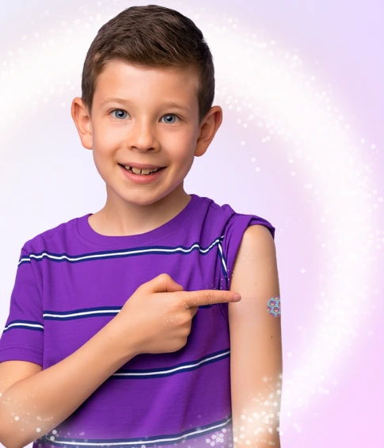
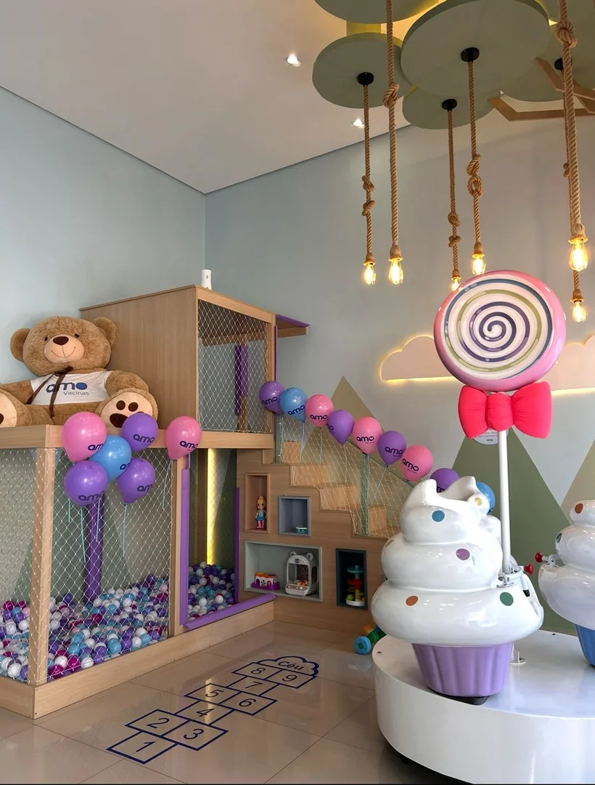

Uma empresa lúdica, humanizada e premium
A rede de vacinação mais premiada do Brasil no segmento, cuidando de famílias com amor há 10 anos.


Potências femininas que transformaram a experiência da vacinação
Nossa história começa com um sentimento: amor.
A Amo Vacinas nasceu do sonho e da visão empreendedora das irmãs Juliana e Thaís, que acreditavam que a busca pela saúde poderia, e deveria, ser uma jornada mais humana, acolhedora e positiva. Desde o início, o propósito foi claro: transformar algo essencial para a vida, a vacinação, em uma experiência melhor para as pessoas.
A inspiração surgiu a partir de uma vivência pessoal marcante. O pai das fundadoras, médico respeitado, havia adquirido uma nova tecnologia para o armazenamento de vacinas. Esse momento despertou um insight poderoso: havia espaço, e necessidade, para melhorar não apenas a técnica, mas também a forma como a vacinação era percebida e vivenciada pelos pacientes.
Foi assim que nasceu a Amo Vacinas.
Aqui, vacinar é um gesto de amor. Um momento especial, humano e acolhedor. Cada família que chega até nós carrega histórias, expectativas e, muitas vezes, receios vindos de experiências anteriores. Por isso, desenvolvemos um modelo de atendimento que une excelência técnica, empatia e ambientes cuidadosamente preparados para reduzir a ansiedade e devolver segurança.
Com uma equipe altamente treinada, tecnologias de controle da dor, salas temáticas e uma cultura construída sobre amor, cuidado e responsabilidade, mostramos todos os dias que a vacinação pode ser leve, tranquila e até encantadora.
O que começou em uma pequena sala no Ceará evoluiu para a maior e melhor rede de vacinação humanizada do Brasil, sem nunca perder a essência: cuidar com carinho, agir com responsabilidade e transformar vidas por meio da prevenção.
Tem um minuto? Vale a pena assistir o nosso vídeo institucional
Seu bem mais precioso merece o melhor cuidado, do início ao fim.

Experiência que acolhe, ambientes que encantam
Nossas salas temáticas foram criadas para transformar a vacinação em um momento leve e divertido. Cada detalhe foi pensado para reduzir a ansiedade, acolher crianças e oferecer às famílias uma vivência diferente de tudo o que já viram em clínicas tradicionais.
Além disso, o serviço "Amo Vai Até Você" leva essa mesma experiência a escolas, condomínios, empresas e maternidades, garantindo praticidade e conforto, sem abrir mão da qualidade. Seja na clínica ou onde a família estiver, cumprimos nossa promessa de oferecer uma vacinação humanizada, conveniente e verdadeiramente diferenciada.
A Amo em cada detalhe
Momentos reais das nossas clínicas, direto do nosso Instagram.
O futuro da vacinação chegou e cresce com saúde
Reconhecimento de quem entende de franquia e de quem mais importa: as famílias.
- ÚNICA no Brasil chancelada pela ABF (Associação Brasileira de Franchising) no segmento
- ÚNICA do Brasil a receber o prêmio da PEGN (Pequenas Empresas & Grandes Negócios)
- Avaliação 5 estrelas no atendimento no Google